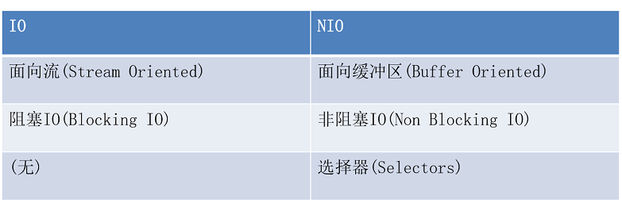
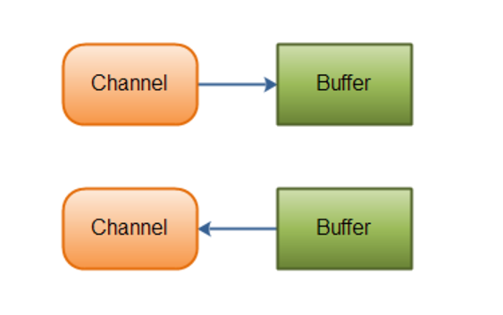
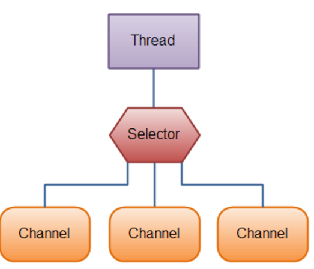
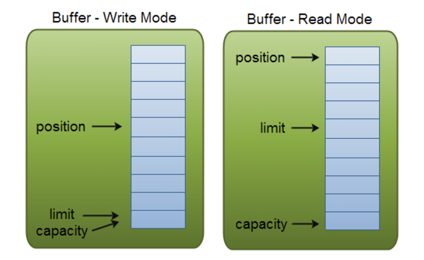

x
xxxxxxxxxx1.NIO简介2.Channel和Buffer3.Selector4.Buffer的使用5.FileChannel的使用xxxxxxxxxx1.了解NIO2.了解Channel和Buffer3.理解Selector的作用4.掌握FileChannel的使用####
java.nio全称java non-blocking IO，是指jdk1.4 及以上版本里提供的新api（New IO） ，为所有的原始类型（boolean类型除外）提供缓存支持的数据容器，使用它可以提供非阻塞式的高伸缩性网络。
Java NIO 由以下几个核心部分组成：
NIO和普通IO的区别

基本上，所有的 IO 在NIO 中都从一个Channel 开始。Channel 有点象流。 数据可以从Channel读到Buffer中，也可以从Buffer 写到Channel中。这里有个图示：

JAVA NIO中的一些主要Channel的实现：
Java NIO里关键的Buffer实现：
Selector允许单线程处理多个 Channel。如果你的应用打开了多个连接（通道），但每个连接的流量都很低，使用Selector就会很方便。例如，在一个聊天服务器中。
这是在一个单线程中使用一个Selector处理3个Channel的图示：

要使用Selector，得向Selector注册Channel，然后调用它的select()方法。这个方法会一直阻塞到某个注册的通道有事件就绪。一旦这个方法返回，线程就可以处理这些事件，事件的例子有如新连接进来，数据接收等。
Java NIO中的Buffer用于和NIO通道进行交互。如你所知，数据是从通道读入缓冲区，从缓冲区写入到通道中的。
缓冲区本质上是一块可以写入数据，然后可以从中读取数据的内存。这块内存被包装成NIO Buffer对象，并提供了一组方法，用来方便的访问该块内存。
使用Buffer读写数据一般遵循以下四个步骤：
写入数据到Buffer
调flip()方法
从Buffer中读取数据
调用clear()方法或者compact()方法
当向buffer写入数据时，buffer会记录下写了多少数据。一旦要读取数据，需要通过flip()方法将Buffer从写模式切换到读模式。在读模式下，可以读取之前写入到buffer的所有数据。
一旦读完了所有的数据，就需要清空缓冲区，让它可以再次被写入。有两种方式能清空缓冲区：调用clear()或compact()方法。clear()方法会清空整个缓冲区。compact()方法只会清除已经读过的数据。任何未读的数据都被移到缓冲区的起始处，新写入的数据将放到缓冲区未读数据的后面。
案例一：使用ByteBuffer
xxxxxxxxxxpublic static void main(String[] args) { //1创建缓冲区 ByteBuffer buffer=ByteBuffer.allocate(1024); //2向缓冲区中添加内容 buffer.put("helloworld".getBytes()); //3切换为读模式 buffer.flip(); //4获取单个字节 //buffer.get(); //5获取多个字节 byte[] data=new byte[buffer.limit()]; buffer.get(data); System.out.println(new String(data)); //6清空缓冲区 buffer.clear(); }缓冲区本质上是一块可以写入数据，然后可以从中读取数据的内存。这块内存被包装成NIO Buffer对象，并提供了一组方法，用来方便的访问该块内存。
为了理解Buffer的工作原理，需要熟悉它的三个属性：
position和limit的含义取决于Buffer处在读模式还是写模式。不管Buffer处在什么模式，capacity的含义总是一样的。
这里有一个关于capacity，position和limit在读写模式中的说明。

capacity
作为一个内存块，Buffer有一个固定的大小值，也叫“capacity”.你只能往里写capacity个byte、long，char等类型。一旦Buffer满了，需要将其清空（通过读数据或者清除数据）才能继续写数据往里写数据。
position
当你写数据到Buffer中时，position表示当前的位置。初始的position值为0.当一个byte、long等数据写到Buffer后， position会向前移动到下一个可插入数据的Buffer单元。position最大可为capacity – 1.
当读取数据时，也是从某个特定位置读。当将Buffer从写模式切换到读模式，position会被重置为0. 当从Buffer的position处读取数据时，position向前移动到下一个可读的位置。
limit
在写模式下，Buffer的limit表示你最多能往Buffer里写多少数据。 写模式下，limit等于Buffer的capacity。
当切换Buffer到读模式时， limit表示你最多能读到多少数据。因此，当切换Buffer到读模式时，limit会被设置成写模式下的position值。换句话说，你能读到之前写入的所有数据（limit被设置成已写数据的数量，这个值在写模式下就是position）
Buffer的分配
要想获得一个Buffer对象首先要进行分配。 每一个Buffer类都有一个allocate方法。下面是一个分配48字节capacity的ByteBuffer的例子。
xxxxxxxxxxByteBuffer buf = ByteBuffer.allocate(1024);//创建缓冲区，大小为1024个字节
向Buffer中写数据
写数据到Buffer有两种方式：
从Channel写到Buffer的例子
通过put方法写Buffer的例子：
xxxxxxxxxxbuf.put(127);
put方法有很多版本，允许你以不同的方式把数据写入到Buffer中。例如， 写到一个指定的位置，或者把一个字节数组写入到Buffer。 更多Buffer实现的细节参考JavaDoc。
flip()方法
flip方法将Buffer从写模式切换到读模式。调用flip()方法会将position设回0，并将limit设置成之前position的值。
换句话说，position现在用于标记读的位置，limit表示之前写进了多少个byte、char等 —— 现在能读取多少个byte、char等。
从Buffer中读取数据
从Buffer中读取数据有两种方式：
从Buffer读取数据到Channel的例子：
使用get()方法从Buffer中读取数据的例子
xxxxxxxxxxbyte aByte = buf.get();get方法有很多版本，允许你以不同的方式从Buffer中读取数据。例如，从指定position读取，或者从Buffer中读取数据到字节数组。更多Buffer实现的细节参考JavaDoc。
rewind()方法
Buffer.rewind()将position设回0，所以你可以重读Buffer中的所有数据。limit保持不变，仍然表示能从Buffer中读取多少个元素（byte、char等）。
clear()与compact()方法
一旦读完Buffer中的数据，需要让Buffer准备好再次被写入。可以通过clear()或compact()方法来完成。
如果调用的是clear()方法，position将被设回0，limit被设置成 capacity的值。换句话说，Buffer 被清空了。Buffer中的数据并未清除，只是这些标记告诉我们可以从哪里开始往Buffer里写数据。
如果Buffer中有一些未读的数据，调用clear()方法，数据将“被遗忘”，意味着不再有任何标记会告诉你哪些数据被读过，哪些还没有。
如果Buffer中仍有未读的数据，且后续还需要这些数据，但是此时想要先先写些数据，那么使用compact()方法。
compact()方法将所有未读的数据拷贝到Buffer起始处。然后将position设到最后一个未读元素正后面。limit属性依然像clear()方法一样，设置成capacity。现在Buffer准备好写数据了，但是不会覆盖未读的数据。
mark()与reset()方法
通过调用Buffer.mark()方法，可以标记Buffer中的一个特定position。之后可以通过调用Buffer.reset()方法恢复到这个position。例如：
xxxxxxxxxxbuffer.mark(); //添加标记buffer.reset();//恢复到标记位置Java NIO中的FileChannel是一个连接到文件的通道。可以通过文件通道读写文件。
FileChannel无法设置为非阻塞模式，它总是运行在阻塞模式下。
5.1打开FileChannel
在使用FileChannel之前，必须先打开它。但是，我们无法直接打开一个FileChannel，需要通过使用一个InputStream、OutputStream或RandomAccessFile来获取一个FileChannel实例。下面是通过RandomAccessFile打开FileChannel的示例：
xxxxxxxxxxRandomAccessFile aFile = new RandomAccessFile("data/nio-data.txt", "rw");FileChannel inChannel = aFile.getChannel();5.2从FileChannel读取数据
调用多个read()方法之一从FileChannel中读取数据。如：
xxxxxxxxxxByteBuffer buf = ByteBuffer.allocate(48);int bytesRead = inChannel.read(buf);首先，分配一个Buffer。从FileChannel中读取的数据将被读到Buffer中。
然后，调用FileChannel.read()方法。该方法将数据从FileChannel读取到Buffer中。read()方法返回的int值表示了有多少字节被读到了Buffer中。如果返回-1，表示到了文件末尾。
5.3 向FileChannel写数据
使用FileChannel.write()方法向FileChannel写数据，该方法的参数是一个Buffer。如：
xxxxxxxxxxString newData = "New String to write to file..." + System.currentTimeMillis();ByteBuffer buf = ByteBuffer.allocate(48);buf.clear();buf.put(newData.getBytes());buf.flip();while(buf.hasRemaining()) { channel.write(buf);}注意FileChannel.write()是在while循环中调用的。因为无法保证write()方法一次能向FileChannel写入多少字节，因此需要重复调用write()方法，直到Buffer中已经没有尚未写入通道的字节。
5.4 关闭FileChannel
用完FileChannel后必须将其关闭。如：
xxxxxxxxxxchannel.close();xxxxxxxxxx//1创建FileOutputStreamFileOutputStream fos=new FileOutputStream("d:\\out.txt");//2获取通道FileChannel outChannel = fos.getChannel();//3创建缓冲区ByteBuffer buffer=ByteBuffer.allocate(1024);//4向缓冲区中放入数据buffer.put("hello world".getBytes());//5写入buffer.flip();outChannel.write(buffer);//6关闭outChannel.close();System.out.println("写入完毕");
xxxxxxxxxx//1创建FileInputStreamFileInputStream fis=new FileInputStream("d:\\out.txt");//2创建通道FileChannel inChannel = fis.getChannel();//3创建缓冲区ByteBuffer buffer=ByteBuffer.allocate(1024);int len=inChannel.read(buffer);System.out.println(len);//4处理数据buffer.flip();String data=new String(buffer.array(),0,len);System.out.println(data);//5关闭inChannel.close();
xxxxxxxxxx//1创建通道FileChannel inChannel = FileChannel.open(Paths.get("d:\\003.jpg"),StandardOpenOption.READ);FileChannel outChannel=FileChannel.open(Paths.get("d:\\haha.jpg"),StandardOpenOption.WRITE,StandardOpenOption.CREATE);//2创建缓冲区ByteBuffer buffer=ByteBuffer.allocateDirect(1024);int len=0;//3复制while((len=inChannel.read(buffer))!=-1){buffer.flip();outChannel.write(buffer);buffer.clear();}//4关闭inChannel.close();outChannel.close();System.out.println("复制完毕");xxxxxxxxxx//1创建通道FileChannel inChannel = new RandomAccessFile("d:\\01.wav", "r").getChannel();FileChannel outChannel=new RandomAccessFile("d:\\02.wav", "rw").getChannel();//2使用内存映射缓冲区MappedByteBuffer map = inChannel.map(MapMode.READ_ONLY, 0,inChannel.size());outChannel.write(map);//3关闭inChannel.close();outChannel.close();System.out.println("复制完毕");System.out.println(inChannel.getClass().toString());注意：如果文件超过2G,需要分多个文件映射。
1 .使用NIO读取文件的步骤
2 .使用NIO读取文件的步骤
1 .使用NIO复制文件
1.简述常见的NIO类及作用